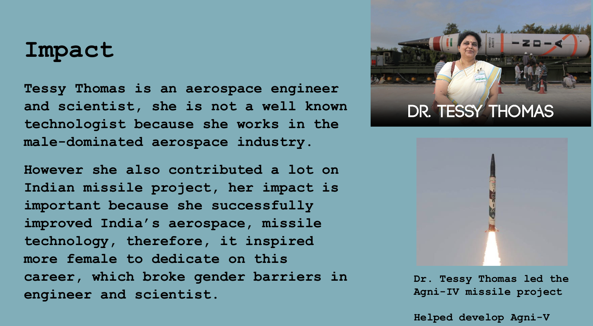

Hidden Figures

The first project I worked on was Hidden Figures, which my partners and I found a rarely known scientist who made a huge contribution to the world. She is Tessy Thomas, the first woman to head a missile project in India. We created a slide presentation to introduce her and her achievements. Her story and afforts inspired many people to pursue their dreams. This project helped me learn how to work in a team, research information, and present it in a clear and engaging way. It also taught me the importance of recognizing and celebrating the contributions of women in science and technology.